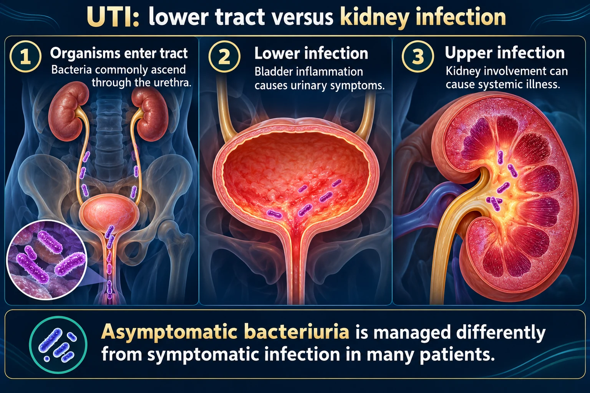

Lower tract infection · and what happens when it climbs
One infection, two addresses. A UTI lives low — urethra and bladder (cystitis). If it gets bad enough it climbs the ureters and infects the kidney — that is pyelonephritis, and it is the serious one. Same bugs, same burning… plus fever and flank pain.
📄 Simple Nursing original — opens in Drive →
Bacteria almost never fall into the kidney from above — they walk in the front door and climb.
EXAM TIP Bacteria enter at the urethra and climb upward — so every level of the urinary tract has its own infection name, and the higher it goes the sicker the client gets.

Asymptomatic bacteriuria is managed differently from symptomatic infection in many patients.
Organisms enter tract
Bacteria commonly ascend through the urethra.
Lower infection
Bladder inflammation causes urinary symptoms.
Upper infection
Kidney involvement can cause systemic illness.
Cystitis
Dysuria, urgency, frequency and suprapubic discomfort are common.
Pyelonephritis
Fever, flank pain, nausea or systemic illness suggest upper tract involvement.
Care
Obtain ordered urine testing; administer appropriate antibiotics and reassess response.
Escherichia coli from the bowel/perineum causes roughly 80–85% of uncomplicated UTIs. It only has to travel a short distance in a female.
Catheter-Associated UTI. Risk climbs with every single day the catheter stays in. The device gives bacteria a straight, protected road into the bladder.
Burning and frequency say bladder. Fever and flank say kidney. Confusion says older adult.
Key distinction: a simple bladder infection makes you miserable — it usually does not make you systemically ill. High fever, chills, nausea and back pain mean it has moved up.
Everything above, plus a systemically sick patient:
| Feature | 🫙 Lower UTI / Cystitis | 🫘 Pyelonephritis |
|---|---|---|
| Where | Urethra & bladder | Kidney & renal pelvis |
| Fever | Low-grade or none | High >101°F + shaking chills |
| Pain location | Suprapubic — low, front, over the bladder | Flank / CVA — back, radiating toward the umbilicus |
| How sick | Uncomfortable, walking around | Systemically ill — N/V, malaise, may need admission |
| Urine clue | WBCs, bacteria, nitrites | Same + WBC casts (formed in the tubules) |
| Typical treatment | Short oral course, 3–7 days | Longer course 7–14 days; often IV first |
| Worst outcome | Ascends to the kidney | Urosepsis, renal scarring, chronic kidney disease |
Answer first: in an older adult, new-onset confusion — not burning — is often the only sign of a UTI.
Growth threshold: the source uses >10,000 organisms/mL as significant. Many labs report ≥100,000 CFU/mL for an asymptomatic clean-catch and accept lower counts in a symptomatic patient — follow your lab's reference range.
Bacteria cross from the kidney into the bloodstream. This is the reason pyelonephritis gets admitted.
Kill the bug, flush the tract, and teach the habits that keep it from coming back.
| Drug | Where it fits | Key nursing point |
|---|---|---|
| Trimethoprim/ sulfamethoxazole (TMP-SMX, Bactrim) | First-line uncomplicated cystitis | Sulfa allergy! Watch for rash → Stevens-Johnson. ↑ bleeding with warfarin. Push fluids. |
| Nitrofurantoin (Macrobid, Macrodantin) | Uncomplicated bladder infection only | Take with food or milk. Brown urine is normal. Not for pyelonephritis — it does not reach kidney tissue. |
| Fosfomycin (Monurol) | Acute uncomplicated cystitis | One 3 g packet, dissolved in 90–120 mL cool water. |
| Fluoroquinolones (ciprofloxacin, levofloxacin) | Pyelonephritis / complicated UTI | Tendon rupture & neuropathy risk. Separate from antacids, calcium, iron by 2–6 hr. |
| Ceftriaxone IV | Inpatient pyelonephritis | Give with IV fluids; reassess for oral step-down once afebrile. |
| Methenamine (Hiprex, Urex) | Prevention of recurrent UTI | Needs acidic urine to work — avoid excess citrus & milk. |
Universal rule: finish the entire course even after symptoms disappear — stopping early is how resistant organisms are born.
Avoid: ☕ caffeine · 🍺 alcohol · 🥤 carbonation · 🌶️ spicy foods · 🫧 bubble baths, douches & scented feminine products — all bladder irritants.
| Question stem | Answer |
|---|---|
| A cloudy urine specimen is an indication of… | Bacteria in the urine |
| Client reports dysuria and frequency — which test does the nurse anticipate? | Urine culture |
| Mid-stream specimen was collected 2 hours ago and left sitting in the bathroom. Priority action? | Discard it and obtain a new specimen |
| Temp 102.5°F (39°C), grabbing her left side, dull pain, concentrated cloudy urine. This is… | Pyelonephritis |
The master rule for this whole topic: Assess 1st · Interventions 2nd. If both an assessment and an action look right, the assessment comes first — unless the client is unstable.
Saved study graphics from your own collection. Each one is someone else’s work — check anything clinical against your course materials before you rely on it.
These newly drawn concept diagrams consolidate the retired illustration sets. The accompanying study notes and original handout links remain on this page.